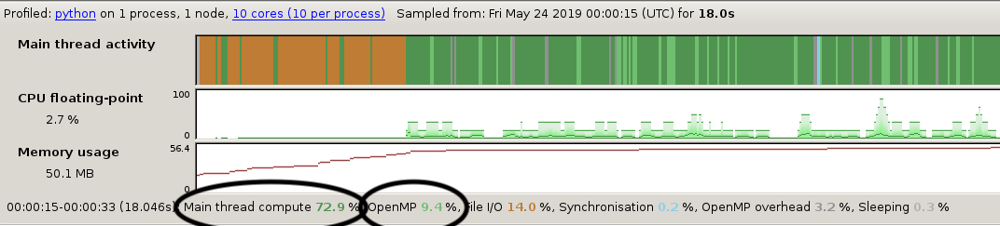
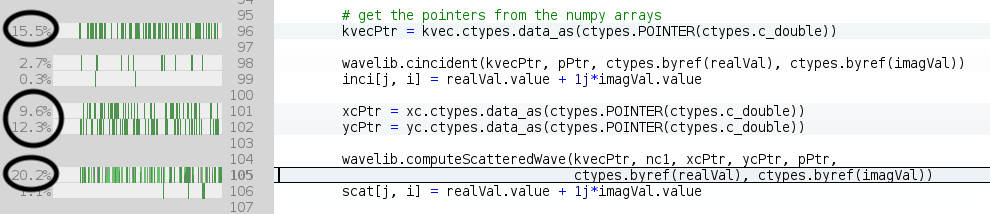

Profiling an OpenMP program with MAP
- Objectives
- Code example
- Using MAP to profile an OpenMP executable
- Exercises
- Interpreting the profiling information
- Exercises
Objectives
You will:
- learn how to use MAP to profile an OpenMP code
- learn how to interpret MAP multithreaded profiling data
Code example
We’ll use the scatter.py code in directory openmp of the solutions branch. Start by
git fetch --all
git checkout solutions
cd openmp
Using MAP to profile an OpenMP executable
To use MAP we need to load the forge module in our batch script and insert map --profile between srun and the executable. See for example
ml forge
srun map --profile python scatter.py
in the Slurm script “scatter.sl”.
Note: command map --profile must follow srun in the case of a serial/threaded program. (For MPI programs map --profile should precede srun.)
Exercises
- edit script
scatter.sl:
- apply 8 OpenMP threads
- load module
forge- add command
map --profileto the executable- submit the job
Interpreting the profiling information
Upon execution, a file with subscript .map will be generated. The results can be viewed with the command map,
map python_scatter_py_1p_1n_8t_2019-05-24_00-00.map
(the .map file name will vary with each run.)
Below is an example of a profiling data obtained by running python scatter.py -nx 256 -ny 256 and using 8 OpenMP threads.

On top, the activity window shows the time spent between I/O (orange), serial computing (dark green) and parallel computing (light green). The orange parts amount to initialisation, a one off cost that does not increase with problem size and which is therefore not of great interest here. (Loading shared libraries such as numpy are responsible for the orange I/O activity.)
{kind=link}
More interestingly, we see that 73 percent of the time is spent in the serial part of the code and 9 percent in the parallel part. The parallel part is the one that decreases as we throw more threads to the problem. This suggests that we are close to achieving the maximum scalability of the program with 8 threads - adding more threads can only reduce the execution time by 9 percent at most.
Also of interest, we observe that more than 50 percent of the execution time involves four lines of code (96, 101, 102 and 105). Lines 96, 101 and 102 all are purely serial and involve casting a numpy array into a C pointer which can be passed to a C function. Together these lines consume 36 percent of the execution time. 
{kind=link}
Exercises
- edit scatter.py:
- remove lines 101 and 102 (which are superfluous)
- move line 96 out of the loop (kvec is constant)
- regenerate the profiling data and compare the newly obtained profiling data with the previously obtained data
- how did the contributions of parallel and serial execution times relative to the total time change?
- how did the the contribution of function
computeScatterWaveto the total execution time change?